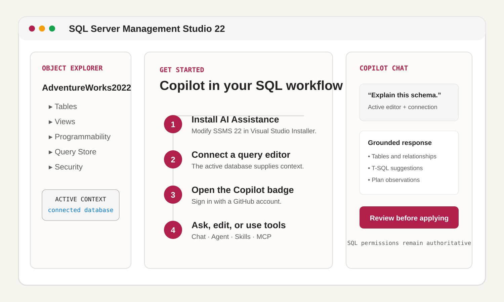
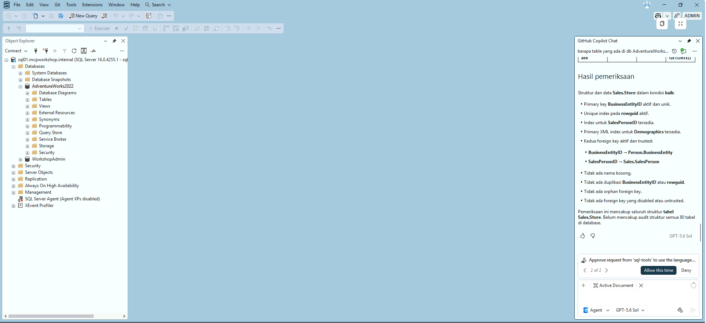

Explain unfamiliar systems
Ask natural-language questions about code, schema, and database behavior without leaving the editor.
Six-step guided workshop · GitHub Copilot + SQL MCP
Learn how GitHub Copilot in SQL Server Management Studio helps a DBA understand an unfamiliar database, investigate an expensive query, and produce a safer optimization—grounded in Microsoft SQL MCP and Query Store evidence.
Understand the assistant
GitHub Copilot is an AI coding assistant that helps developers understand, write, explain, and improve code. In a database workflow, it is most useful as a collaborator: it proposes queries and explanations while the DBA retains control over permissions, correctness, and deployment.
Ask natural-language questions about code, schema, and database behavior without leaving the editor.
Generate T-SQL, document intent, refactor a query, and review the proposed change as a diff.
Agent mode can select tools and iterate through a task, but it never receives permissions beyond the connected identity.
Work where the database lives
Microsoft documents GitHub Copilot as an AI assistant in SSMS 22 or later. Install the AI Assistance workload, connect a query editor to the database, open the Copilot badge, and sign in with a GitHub account that has Copilot access.

/explain, /fix, /optimize, and /doc.CONSTITUTION.md to provide durable database rules and an optional execution identity.SELECT and EXECUTE grants.The business problem
Adventure Works has an unfamiliar schema and a month-end report that has become expensive as sales history grows. The DBA must understand the database, identify the query shape, and optimize it without changing a single result row.
Sales.Store represents, and how key entities relate.lab.FactSales and lab.usp_MonthEndSalesBaseline; attach the query or plan as context.Copilot can summarize objects and relationships, but the active login controls what it can inspect. In the workshop, schema exploration is connected to AdventureWorks2022 and reviewed by the DBA.
Query Store narrows attention to top resource consumers and wait categories. MCP returns described, bounded evidence; Copilot turns that evidence into ranked hypotheses and candidate changes.
Build the disposable lab
Run these steps from PowerShell 7.4 or later. Deployment is billable and phrase-gated. Never place secrets in source control, terminal screenshots, or chat.
Paste the exact 40-character commit SHA that was reviewed; do not treat the repository’s current HEAD as approval.
$repositoryCommit = Read-Host 'Reviewed 40-character commit SHA'
if ($repositoryCommit -cnotmatch '^[0-9a-f]{40}$') { throw 'Invalid commit SHA.' }
git clone https://github.com/ibranibeny/mcp-sql-query-store-workshop.git
Set-Location ./mcp-sql-query-store-workshop
git fetch origin $repositoryCommit
git checkout --detach $repositoryCommit
if ((git rev-parse HEAD).Trim() -cne $repositoryCommit) { throw 'Commit pin failed.' }The repository test path is local and creates no Azure resources.
python -m venv .venv
./build/Install-DevDependencies.ps1 -AllowPublicPackageIndex -AllowPowerShellGallery
./build/Test-Repository.ps1 -RequirePSScriptAnalyzerUse your real subscription, tenant, facilitator public IPv4 /32, and an expiration within seven days.
$subscriptionId = '<subscription-guid>'
$tenantId = '<tenant-guid>'
$facilitatorCidr = '<public-ipv4>/32'
$expiresOn = (Get-Date).Date.AddDays(5)
$repositoryUrl = 'https://github.com/ibranibeny/mcp-sql-query-store-workshop'
$credential = Get-Credential -UserName 'workshopadmin'
$databaseMasterKeyPassword = Read-Host 'Database master key password' -AsSecureString
$mcpReaderPassword = Read-Host 'MCP reader password' -AsSecureString
Connect-AzAccount -Tenant $tenantId -Subscription $subscriptionId
$context = Set-AzContext -Tenant $tenantId -Subscription $subscriptionId
if ($context.Subscription.Id -cne $subscriptionId -or $context.Tenant.Id -cne $tenantId) {
throw 'Azure context verification failed.'
}Stop if any context, provider, quota, SKU, image, licensing, CIDR, or expiration check fails.
./deploy/Test-WorkshopPrerequisites.ps1 `
-SubscriptionId $subscriptionId `
-TenantId $tenantId `
-FacilitatorCidr $facilitatorCidr `
-ExpiresOn $expiresOn `
-WindowsClientLicenseAttested `
-SqlEnterpriseCostAcknowledged `
-BillableResourcesAcknowledgedConfirm the region, two VM SKUs, disks, private SQL boundary, NAT, RDP /32, licensing, expiration, and cost categories before approving.
./deploy/Deploy-WorkshopEnvironment.ps1 `
-SubscriptionId $subscriptionId -TenantId $tenantId `
-FacilitatorCidr $facilitatorCidr -ExpiresOn $expiresOn `
-Credential $credential `
-DatabaseMasterKeyPassword $databaseMasterKeyPassword `
-McpReaderPassword $mcpReaderPassword `
-RepositoryUrl $repositoryUrl -RepositoryCommit $repositoryCommit `
-WindowsClientLicenseAttested `
-SqlEnterpriseCostAcknowledged `
-BillableResourcesAcknowledged `
-ApproveBillableDeployment `
-ConfirmationPhrase 'DEPLOY rg-mcp-sql-workshop'Proceed only when network boundary, VM boundary, SQL bootstrap, admin bootstrap, and end-to-end readiness all pass. Then RDP to the admin VM and connect SSMS with Windows Authentication as workshopadmin.
DECLARE @WideWork table
(
SyntheticSalesID bigint NOT NULL,
TerritoryID int NULL,
CustomerID int NOT NULL,
ProductID int NOT NULL,
OrderQty smallint NOT NULL,
SalesAmount decimal(19,4) NOT NULL,
WidePayload char(400) NOT NULL
);
INSERT @WideWork
SELECT fs.SyntheticSalesID, fs.TerritoryID, fs.CustomerID,
fs.ProductID, fs.OrderQty, fs.SalesAmount, fs.WidePayload
FROM lab.FactSales AS fs
WHERE CONVERT(date, fs.OrderDate) >= @StartDate
AND CONVERT(date, fs.OrderDate) < @EndDateExclusive;
-- The baseline later reads lab.FactSales a second time for price statistics.The baseline in sql/04-CreateBaselineProcedure.sql wraps OrderDate in CONVERT(date, …), materializes the unused char(400) payload, aggregates late, and reads the fact table again. With 8,000,000 workshop rows and no candidate index, this increases scans and query-workspace memory.
CREATE INDEX IX_FactSales_OrderDate_Territory
ON lab.FactSales (OrderDate, TerritoryID)
INCLUDE (CustomerID, ProductID, OrderQty, UnitPrice, SalesAmount);
;WITH Aggregated AS
(
SELECT fs.TerritoryID, fs.CustomerID, fs.ProductID,
COUNT_BIG(*) AS OrderCount,
CONVERT(bigint, SUM(CONVERT(bigint, fs.OrderQty))) AS TotalQuantity,
CONVERT(decimal(38,4), SUM(CONVERT(decimal(38,4), fs.SalesAmount))) AS TotalSales
FROM lab.FactSales AS fs
WHERE fs.OrderDate >= @StartDate
AND fs.OrderDate < @EndDateExclusive
AND (@TerritoryID IS NULL OR fs.TerritoryID = @TerritoryID)
GROUP BY fs.TerritoryID, fs.CustomerID, fs.ProductID
)
-- The full candidate preserves AverageUnitPrice, ranking, output metadata and ordering.$candidateDba = Get-Credential -Message 'DBA credential for approved candidate creation'
./deploy/Approve-WorkshopCandidate.ps1 `
-Credential $candidateDba `
-ServerInstance 'sql01.mcpworkshop.internal' `
-ExpectedServerName 'sql01.mcpworkshop.internal' `
-ExpectedDatabaseName 'AdventureWorks2022' `
-ConfirmationPhrase 'APPROVE AdventureWorks2022 candidate'If candidate creation or equivalence validation fails, the approval entry point performs fingerprint-verified compensating cleanup of lab.usp_MonthEndSalesOptimized and IX_FactSales_OrderDate_Territory. It refuses cleanup if ownership cannot be proven. The supported full-lab rollback is phrase-gated:
./deploy/Remove-WorkshopEnvironment.ps1 `
-SubscriptionId $subscriptionId `
-TenantId $tenantId `
-ConfirmationPhrase 'DELETE rg-mcp-sql-workshop' `
-Confirm:$falseFollow the trust boundary
The facilitator reaches one public administration endpoint. SQL Server remains private. GitHub Copilot and the local DAB SQL MCP process operate from the admin VM over encrypted private TDS.
See the use case in SSMS
The attached workshop capture shows GitHub Copilot answering an Indonesian schema-quality prompt against the connected AdventureWorks2022 database while SSMS keeps the catalog and approval boundary visible.

Sales.Store. Select the image to open the full-resolution capture.{kind=link}